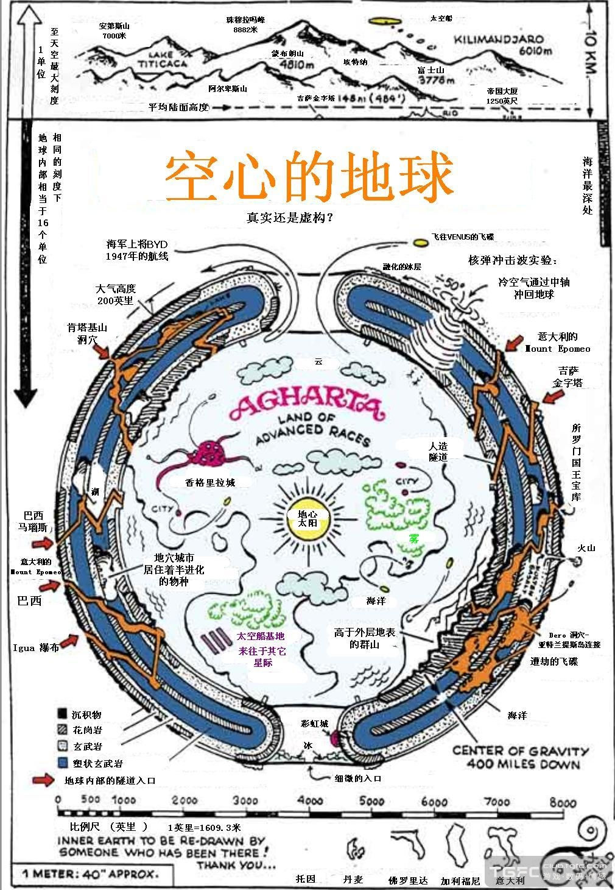
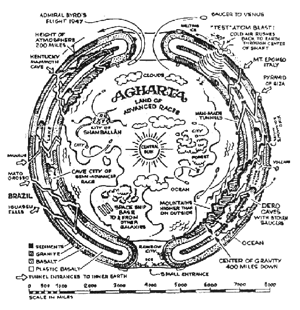

空心地球论--传说中的香巴拉 
Selamat Jarin!（天狼星语：祝福大家！）
，而你们则居住在地球表面——环绕地幔的“地壳”上。今天我们来告诉你，地球母亲的结构完全不同。就像所有天体一样，
比如行星或恒星，地球是空心的。这个事实被那些秘密控制你们的人压制著，因为该真相将把操纵及误导你们的其他核心概念全部颠覆。真相是一个有力的“芝麻开门”，当它被智慧地使用时，它将揭示大量新的知识，并激励你在当前环境中充分应用你的内在智慧。地心世界包含2个主要特徵。第一个特徵是地心世界的地壳，这是地球表面地壳的延续。地球两极的每一极都有一大型的入口或洞口，有点像一个被挖去核的苹果，地壳沿著洞口缠绕下去，包裹住地幔成为空心内部。外部和内部的地壳有著非常相似的地形，拥有海洋、大陆、山脊、湖泊和河流。只不过地壳内部面对著地球的核心，核心发光并被薄雾层遮蔽。这种光比太阳光更为弥漫，因此，地心世界的白天光线比地球表面更为柔弱温和。
地心世界的第二个主要特徵是一个被称为“地穴世界”的存在。地幔中巨大的空洞，一部分是地球母亲形成的自然结构，其他部分则是由地心世界主要社会——Aghartha大陆的高超技术制造而成。该大陆是地球的第二个银河联盟殖民地——利莫里亚(Lemuria)最后的幸存成员。
利莫里亚最初是一个拥有地下成员的地表社会。第一个首都位於约25000前沉入太平洋的某个岛屿上，第二个首都则位於地心世界。后者也是利莫里亚政府在大灾难后移居的位置。那时地表新的统治者——亚特兰蒂斯帝国，命令将主要的隧道入口封存起来，只有在亚特兰蒂斯末日时，利莫里亚人才打开这些封口，从某种死亡中救活了很多地
表居民。这些被救活的地表居民构建了一个社会，在后来的某个时期回归地表，成为位於亚洲南部的Rama帝国，但此后，西元前8千年的大洪水终结了这个试图将人类从
Anunnaki黑暗统治中救治出来的尝试。尽管受到挫折，利莫里亚仍恪守职责，继续保护地表世界免遭黑暗之手的浩劫。就是利莫里亚的银河使者保证了此太阳系在银河联盟中的成员资格。
在大洪水及Rama帝国灭迹后，利莫里亚人重新聚集起来，将他们新成立的社会命名为 Aghartha。首都香巴拉则重新搬迁到一个洞穴中，
此位置正位於今天西藏拉萨所在位置的遥远地底。很多将香巴拉连接到地表的通道位於喜玛拉雅山。就通过这里，圣人们将大能量和神性智慧传播给外部世界，并为特殊事件保留了一个非凡的地方，在那儿，圣人和他们挑选的门徒为了维护地球母亲的神性能量晶格层而相遇。
这项工作和地心世界中的每日无数仪式一起，对保持地球神性能量负有很大责任，这也是利莫里亚留给地表世界的主要财产。就是利莫里亚，也就是后来的Aghartha，一直在看守和保留著光，等待你们回到光的全意识。Aghartha的世界很像你们。那里包含了一个繁荣的生物圈，你可以在那儿找到很多已不再地表上生存的生物，这个奇异的动物园一直被小心呵护。地心的大量城市附近是一个特殊区域，由Aghartha人小心照看并在必要时对此种类繁多的生物圈的很多生物进行疗愈。
空洞的存在有根有据
现在，愈来愈多的科学家相信地球内部有空洞。理由之一是地球面积是5.1×10的8次方平方公里，重量却只有6×10的9次方的100万倍。如果内部充满岩浆，就不该这样轻。造成地球内部空洞的原因是它内部的离心作用。原始的地球是火和岩浆的混合体，地球在旋转的过程中，把重的物质抛向了外层，这便是岩石之类的地壳。而两极几乎不受离心力的影响，所以有可能形成空洞而未形成地壳。离心力影响最大的是赤道，所以那里地层膨胀，而形成了今天椭圆形的地球。专家们推测，两极的洞口直径约有2240千米。由于熔成糊状的炽热物质仍残留在地心部，那里离心力几乎不起作用，于是就成了地心的“太阳”。这个
“太阳”尽管小一些，但却能照射出足以养育动物和植物的光和热，这便是为什么在地球空洞中发现动物和植物的缘故。
1992年，南非洞穴学会和瑞士的洞穴研究团体在非洲的纳米比亚发现了一个神秘的无底洞，该洞位于纳米比亚北部沙漠中心灌木茂盛的山麓下，黑魆魆深不见底。为了查清洞穴的情况，洞穴考察专家把调查入员吊入漆黑的洞穴中。吊下去的调查人员听到的只是钢索的摩擦声，四周完全是一片漆黑、寂静的世界。用灯光向里照射，只见洞中巧夺天工的钟乳石像一幅巨大的帘幕垂向深渊。钢索徐徐下降了120米后，才到达一处水面。这里清水盈溢，一片汪洋，神秘莫测。为了彻底弄清水的深度，调查小组派遣潜水员花了一天半时间，潜入到水下近100米深，但还是没有到底。由于压力太大，只好浮出水面。这个洞穴究竟有多深，还有待于今后考察。它会不会是地球某个空洞的一个末端，迄今仍然是个谜。
说来有趣，海洋中也有“无底洞”。印度洋上有个“无底洞”，位于印度洋北部海域，北纬5度13′，东经69度27′，半径约3海里。这里的洋流属于典型的季风洋流，受热带季风影响，一年有两次流向相互变化。夏季盛行西南季风，海水由西向东顺时针流动，冬季则刚好相反。“无底洞”所在的海域则不受这些变化的影响，几乎呈无洋流的静止状态。所以，这里又被称为“死海”、“黑洞”。
无独有偶，在地中海东部，希腊克法利尼亚岛阿哥斯托利昂港附近的爱奥尼亚海域，有一个许多世纪以来一直在吸取着大量海水的“无底洞”。据估计，每天失踪于这个“无底洞”里的海水竟有3万吨之多。为了揭开其秘密，美国地理学会曾派遣一支考察队去那里进行科学考察。科学家们把一种经久不变的深色染料溶解在海水中，观察染料是如何随海水一起沉下去的。接着又察看了附近和海面以及克法利尼亚岛上的河流湖泊，满怀希望能发现这种染料的踪迹，进而追索同染料在一起的那股神秘的水流。然而，这些实验毫无结果。
至今谁也不知道为什么这里的海水竟然会没完没了地“漏”下去，它能成为地球空心的证明吗?
尽管主流科学家们从来不认同“地球是空心”的说法，但最新解密的地球卫星照片和其他证据显示，北极地区的冰面上竟有一个可以清楚看见的巨大洞穴存在！
俄罗斯物理学家费多尔·尼沃林认为，地球形成之初只不过是飘荡在宇宙中的一团巨大冷块，在太阳和宇宙能量的影响下，它开始受热变成熔岩状态，接着又开始慢慢冷却，地球表面便形成了坚硬的岩石层，但岩层底下的熔岩却仍然保持着沸腾状态，岩浆受热不断膨胀，形成气体扩散到地球外面，经过数亿年的这种膨胀和扩散后，地球中心事实上已经成了一个“巨大的空壳”。尼沃林认为，气体大规模扩散的主要出口就在南北两极，那里现在仍然可以清楚看到的“巨大洞穴”就是明显的地质学证据。
事实上，除了俄罗斯物理学家费多尔·尼沃林外，仍有其他许多科学家相信“地球中空说”理论，他们认为地球内部可能存在着一个巨大的洞穴，里面或许有另一颗星体、有适宜的气候、独特的植物、动物，特殊的文明等，尽管这听起来不可思议，但在没有确实的证据之前，谁也无法断然否定。
在17世纪晚期，英国天文学家Edmund
Halley提议地球由四个同心圆组成而“暗示地球内部居住有生命和靠发光的大气层照明。他认为极光或北极光由这些逃逸出来的气体通过位于极地的薄地壳引起。”
在19世纪早期，1812年战争的一位行为古怪的老兵John Symmes广泛地发扬了内部同心球体的想法，声称通向内部世界的开口就叫做“Symmes洞”。
儒纳·梵尔纳于1864年写了地心游记，而埃德加·赖斯Burroughs(1875-1950年)，火星冒险的创作者和Apes的泰山也写了小说提了空心地球。传说经常激发小说家的想象而小说经常激发pseudoscientist的想象。
在1869年，赛勒斯·里德·Teed，一位草药医生和自称的炼金术士，有一个女人梦见告诉他我们是生活在空心地球内部。差不多过了50年，Teed用小册子和演讲宣称其思想。他甚至创立了一个称做Koreshans的仪式（Koresh就是希伯来人赛勒斯的相同物）。
在1906年，威廉·里德发表了极的幻影，在书里他声称无人能发现北极和南极，因为它们不存在。相反两极是进入空心地球的入口。
在1913年，马歇尔·B·加德纳私下地发表了到地球内部的旅行，在书里他不认可同心球体的想法只是发誓空心地球内是直径600英里的太阳。加德纳也声称在两极有一千英里宽的洞。
在1940年，命运，来自其它世界的飞碟，探索，隐藏的世界与许多流行出版物的合作者雷·帕默与理查德·Shaver合作创作了Shaver
神秘，一个空心地球的人们与先进文明的传说。Shaver甚至声称与内部地球的人们居住在一起。
在1964年，雷蒙德·W·伯钠德，一位密教学家和蔷薇十字会员的领袖发表了空心地球-历史中最伟大的地理发现，由海军上将理德·E·伯德在神秘极地上发现-飞碟的真正由来。
美国海军海军上将理德·E·伯德在1962年飞向北极和1969年飞越南极在他日记里，他告诉进入空心地球内部，与其他人一道旅行了17英里，飞越了山脉、湖泊、河流、绿色植被和动物。他讲述看见了巨大的动物-类似古代活动的猛犸象-在灌木里行走。他最后发现了城市和繁华的文明。外面的温度是华氏74
度。他的飞机受到他以前从来没有见过的飞行类机器的问候。他们护送他到一个安全地方，在那里他受到来自Agartha使者的问候。休息了一会以后，他和他的机组人员被引导与Agartha国王和王后见面。他们告诉他被允许进入Agartha由于他高贵精神与民族品质。他们继续说他们担心行星的安全由于他轰炸和其它政府进行的地面试验。在参观伯德和他的机组人员以后被引导回到行星表面上。
在1965年1月海军上将伯德率领探险队到达南极。在那次远征他和他的组员往下穿入2,300英里进入地球中心。海军上将伯德讲述南极与北极只是多数进入地心的开口的其中两个。他写道看见地底下的太阳。
–空心地球-雷蒙德·伯纳德博士讲述有关人们进入地球内部以及向他们所发生的故事。它提到一张于1960年发表在展现具有繁华山丘美丽山谷的加拿大多伦多全球与邮政上的照片。一个飞行员声称当他飞进北极时候他拍下了照片。
伯纳德也写了来自地球内部的飞碟。他的真实名称是Walter Seigmeister。在他的信里到处声称已经在秘密修行处所接触大神秘学家和西藏的大喇嘛。简而言之他是另外的葛吉夫。伯纳德博士“于1965年9月
10日死于肺炎，那时候正在探索在南美的通向地球内部的隧道”。伯纳德似乎接受曾经与空心地球有联系的许多传说，包括爱斯基摩人起源地球内部和甚至居住至现在的高级文明，开动他们的飞碟偶而进入稀薄的大气中。伯纳德甚至毫不怀疑地接受Shaver声称自空心地球人们那里他在爱因斯坦之前就学会了相对论秘密。
印度佛教典籍的记载
有一部印度佛教的典籍是这样记载的：“香格里拉在一个会涌出美酒的湖中央的浮岛上，那儿建有被神圣森林围绕着的王宫，要前去该岛必须乘坐‘金鸟’才行。”
中甸的仲巴活佛讲过一个故事：康巴地区曾有一个孩子到过香巴拉王国，他看见了车轮大小的莲花，因为走路走累了，他便在那朵硕大的莲花瓣上打了个盹，醒来后却满身清香。他回到家里，他的父母已经过世，围着他的竟是一群老头，他仔细辨认，才看出围着他的那些老头全是孩提时的伙伴。
对藏传佛教的虔诚信仰者来说，他们相信香巴拉王国至今仍然存在着，它是作为人间的惟一 一块净土而保存着的。
那些富有探险精神的西方人却不相信香巴拉仅仅是一个理想王国，他们为找出现实中的香巴拉而进行了孜孜不倦的探求：1924年～1927年，苏俄人尼古拉·雷里西经过艰苦搜寻，据说他在印藏边境一带遇上了来自香巴拉王国的僧侣，僧侣告诉他，香巴拉王国居住在地下之国，他们有着超人的能力，掌握着某种地下的隧道，这些隧道向世界的四面八方延伸。在香巴拉王国有一个巨大的魔镜，他们将其用来观察人类的生活和行踪，魔镜可以旋转，用于看清不同地方的景象。后雷里西神秘失踪，据说是被香巴拉人接走……
AGARTHA

根据传说居住在地心的人们的文明所在地是称做Agartha的地方。 Agartha是用于地下居住者Agartha最常用的名字之一，它的首都城市就是香巴拉。这个信息的来源是名叫Olaf Jansen挪威水手的传记冒烟的上帝。Agartha-威利斯·爱默生写的地下城市的秘密 ，解释了 Jansen 的单桅帆船如何航进一个到达位于北极的地球内部入口。他与Agharta 侨民网络居民一起生活了二年，爱默生写道，全都12英尺高而他们的世界由一个“冒烟”的中央太阳照明。香巴拉的要小一些，它是另一个侨民地，也是网络政府所在地。虽然较小的香巴拉是一内部的陆地，它的卫星侨民地是一更小的依附生态系统，位于地壳下或巧妙地隐藏于山内。